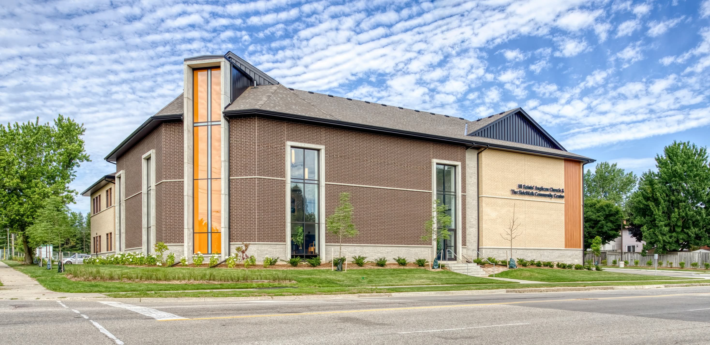

The SideWalk Community Centre on the property of All Saints’ Anglican Church has become a much-needed “third place” for a rapidly changing, diverse neighbourhood in Waterloo. Image credit: All Saints’ Anglican Church
All Saints’ Anglican Church in Waterloo, Ontario, purpose-built the SideWalk Community Centre as part of an extensive redevelopment of its property to provide one of the only in-neighbourhood community centres in the city. The creation of the community centre stemmed from the realization that there was a lack of spaces for recreation and connection in this rapidly changing neighbourhood with a large percentage of new Canadians, visible minorities, and families with limited disposable income. To ensure that it met the community’s needs, leaders and church volunteers collected data from nearby residents, local politicians, and social services in interviews and conversations over a multi-year planning period.
The secular SideWalk Community Centre offers a wide variety of programs, including yoga, pickup sports, music classes, and cultural events, as well as food preparation classes and food assistance programs. The staff and volunteers work to build a place where everyone feels welcome and supported, from recent immigrants learning to cook new meals for their children to teens finding confidence on the basketball court. Opened in 2024, SideWalk welcomed over 14,000 visitors in its first year – then matched that number in the first half of 2025. More than half of attendees were children and teenagers. The high usage rate is evidence that the centre is meeting a community need, particularly for youth and immigrants.
Most of the funding for the SideWalk Centre came from the sale of a portion of the church’s land to a residential developer, with additional financial support from local funders such as the Hallman Foundation. Having that development project already under way helped streamline the zoning and approvals for the community centre, and the new building was soon “shovel ready.” The Church made a deliberate choice to dedicate the majority of the funds from its congregational donations to support building and operating the centre, putting lasting infrastructure in place for a safe, productive community space.

Programming at the SideWalk Centre includes food preparation classes, food assistance programs, pickup sports, yoga, music classes, and cultural events. Image credit: All Saints’ Anglican Church
The robust church community at All Saints’ provides a steady volunteer and donation base that assists in everything from running the food bank to hosting fundraising events that generate supplies for the programs, such as sports balls and cookware. By thoughtfully repurposing property at All Saints’ Anglican Church and listening to local voices, community champions and church volunteers created an essential community amenity in the SideWalk Community Centre. Their example demonstrates how churches can fill gaps in “third places” and strengthen community life at the neighbourhood level.